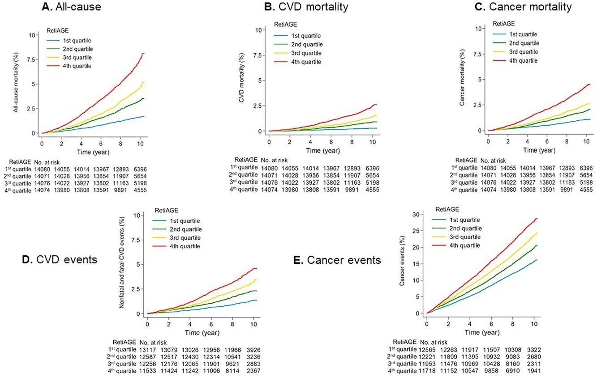

2 The Scientific Foundation: What the Evidence Reveals
2.1 The Retina: A Microcosm of the Body
Imagine a window, not to the outside world, but into the very core of your health. This window, remarkably, is not a sophisticated scanning device or an invasive procedure, but a small patch of tissue lining the back of your eye—the retina. For centuries, the retina has been primarily known for its role in vision, translating light into the images we perceive. However, groundbreaking research is now revealing that the retina is more than just a visual organ. It’s a microcosm of your overall health, an accessible and revealing site that offers a unique window into the inner workings of your body. Through the lens of high-resolution fundus photography, we’re now able to unlock a wealth of information beyond just the health of your eyes.
The retina isn’t simply a standalone structure; it’s an extension of your central nervous system, directly connected to your brain via the optic nerve. This direct link means that the health of the retina often reflects what’s happening within the brain, as well as other organs. Like the brain, the retina has a complex layered structure of neural cells that respond to light, generating electrical signals that are then sent to the visual processing centers of the brain. Because of this direct connection to the brain, the retina is also subject to similar degenerative processes as occur in brain diseases, such as Alzheimer’s. Therefore, studying the retina can often provide valuable insights into the health and functional status of the central nervous system.
The retina is also home to a complex network of blood vessels called the “retinal microvasculature.” These microvessels are extraordinarily delicate and uniquely visible within the body without invasive procedures. This is where the eye’s unique structure provides such a powerful opportunity: the transparency of the ocular tissues allows the direct visualization of the retinal microvasculature through non-invasive high-resolution fundus photography. Unlike other areas of the body where similar structures may exist, the microvasculature of the retina is not obscured by skin or muscle; hence, we can examine the condition of these microvessels non-invasively.
The microvasculature is not merely a passive system. These tiny vessels are highly active, constantly regulating blood flow to ensure that the retina receives the optimal amount of oxygen and nutrients for its metabolic needs. Because of this highly active and sensitive nature, the microvasculature is readily impacted by metabolic changes and systemic inflammation. Therefore, this network of blood vessels provides a direct, easily accessible view of how the cardiovascular system responds to stressors and diseases. Moreover, these microvessels provide a unique opportunity to monitor conditions related to the heart, blood and brain in real-time. In addition to oxygen and nutrients, the blood vessels also transport immune cells and other blood components that can contribute to or mediate inflammation. Consequently, observation of retinal blood vessels can also give valuable insights into the state of inflammation of the body.
Further solidifying the idea of the retina as a microcosm, the retina shares embryonic origins, physiological characteristics, and anatomical structures with vital organs like the heart, brain, and kidneys. This shared developmental pathway means that these organs are often affected by similar diseases. For example, the endothelial cells that line the blood vessels in the heart, brain, kidneys and retina are all derived from similar progenitors in the embryo. Consequently, diseases that target endothelial cells, such as cardiovascular disease, can often be observed via changes in the retinal blood vessels. In fact, the study of retinal vascular changes has even helped researchers discover new potential disease mechanisms of systemic disorders.
The significance of this shared origin is that the retina is often subjected to the same degenerative and pathological processes as many other tissues, making it a valuable proxy for what’s happening throughout the body. Thus, the retina may not just reflect the state of one’s eyes, but may also reflect the cumulative effects of overall health over time.
2.2 The Advantage of Fundus Photography
While these concepts may be complex, they are made accessible through the use of high-resolution fundus photography. This specialized imaging technique uses a camera with particular optics and light spectrum to capture detailed images of the retina, including the optic disc, blood vessels, and the macula, the area of sharp central vision. These photographs reveal subtle changes not easily visible during a traditional ophthalmoscopy exam (looking into the eyes using a handheld tool). These photos also generate a permanent record of the retina that can be analysed by human and AI.
Through the lens of high-resolution fundus photography, AI can detect a host of changes in the retina that indicate the presence of an underlying condition. These changes may be related to:
Vessel Caliber: The diameter of blood vessels (arterioles and venules). Narrowing or widening can be indicators of high blood pressure or inflammation.
Vessel Tortuosity: The degree of bending or twisting in blood vessels. Abnormally tortuous vessels can be linked to age or other disease processes.
Changes in Colour: Differences in the appearance of the retina related to the blood flow, oxygenation, or the presence of certain pigments.
Presence of Lesions: Such as hemorrhages, exudates, and drusen.
Changes in Retinal Layer Thickness: Variations in layer thickness have been shown to correlate with a variety of systemic diseases.
The power of fundus photography as a tool lies in its ability to capture these subtle signals, offering a glimpse into the intricate workings of the body. It reveals information not readily apparent through routine physical exams or blood tests. Often, these subtle retinal changes precede more pronounced systemic symptoms and can therefore act as a warning system, allowing for earlier detection and intervention.
This also highlights the importance of looking beyond the overt signs of disease. Many individuals, especially those interested in wellness and preventive medicine, may not have obvious symptoms of any disease and are considered “healthy”. However, even if a disease is yet to manifest clinically, subclinical or pre-symptomatic stages may be detectable via these subtle changes in retinal morphology.
By studying the retina through high-resolution fundus photography, we are no longer confined to assessing just eye-related health. Instead, this technology allows us to unlock the secrets held within this unique tissue. It enables us to:
Assess the health of your vascular system
Determine your likelihood of certain systemic conditions
Gain insight into your biological age
Identify potential early signs of disease
This holistic view, enabled by retinal imaging, moves us away from a purely reactive approach to health and towards a more proactive and personalized model of care. It is a method that acknowledges the interconnectedness of the body’s systems and empowers individuals to take control of their own health and wellbeing.
The retina, once considered solely as an organ of vision, is now recognized as a fascinating and valuable tissue that can be used to assess overall health. High-resolution fundus photography and the power of AI have given us the ability to delve into these secrets to find clues about disease states, and biological aging, opening up a new frontier in the way we understand, monitor and promote health. While research is ongoing, the basic principles and studies outlined in this section clearly demonstrate the amazing potential of this modality to revolutionize wellness and health assessment.
2.3 Deep Learning & Artificial Intelligence
The human eye is remarkable in its ability to discern incredibly subtle patterns. However, even the most skilled human eye can’t compete with the power of a computer when it comes to quickly processing and analyzing vast amounts of complex information. This is where deep learning and artificial intelligence (AI) become invaluable tools in the realm of high-resolution fundus photography. To fully appreciate the power of fundus imaging for health assessment, understanding the role of AI is essential.
As we discussed in the previous section, the retina holds a wealth of information about our overall health. However, identifying and interpreting the subtle changes within a retinal image can be challenging. This is where traditional methods have their limitations; relying on human interpretation is not only time-consuming, but it can also be subject to inter- and intra-reader variability (that is, one person might interpret the same photo differently on different occasions, and two people might interpret the same photo differently from each other). With AI, specifically deep learning, these limitations can be overcome.
Traditional computer programs have often relied on “hand-crafted” algorithms. These were built by human engineers, who would pre-program all the steps the program must take, and which features it should look for in the images. Deep learning provides a radical shift, because it is not programmed to follow pre-determined instructions. Instead, a deep learning system is trained on vast amounts of data. For example, instead of telling the AI program how to identify a blood vessel, a deep learning system is trained on hundreds of thousands of retinal images and their corresponding health outcomes, learning the subtle and complex relationships between image patterns and disease states. This process allows AI to detect patterns and features that a human eye might miss, making the diagnostic and predictive capabilities of fundus imaging even more powerful.
Deep learning is a specific type of machine learning (a subfield of AI) that employs artificial neural networks with multiple layers (hence the name “deep”). These layers enable the AI system to process information through hierarchical stages, similar to the complex networks in the brain. In effect, the AI algorithm “learns” what features are relevant for the task at hand, and “decides” on the relative weighting that should be applied to these features. In general, a deep learning model is trained on hundreds of thousands (or even millions) of retinal images with their corresponding ground-truth clinical diagnoses and other health information; thus, each layer in the neural network learns increasingly more abstract and relevant features, ultimately allowing it to perform a task as sophisticated as detecting glaucoma or diabetic retinopathy, or predicting an individual’s biological age.
The advantage of this “deep” architecture is that it enables the AI model to automatically extract higher level and more nuanced characteristics from the images. For example, rather than being programmed to analyze just vessel caliber or vessel tortuosity, AI will automatically learn to assess these factors, and other image features, and then learns how to weigh these factors relative to the health outcomes. This also means that deep learning is capable of extracting new information, even about those underlying factors that may not even be discernable to the human eye, and which might have been missed using standard methods.
Opticare has incorporated this revolutionary technology into an AI-powered fundus camera to provide state-of-the-art health assessments. The Opticare AI system is a deep learning model trained on a massive dataset of over 30 million labeled retinal images. This training enables the system to identify subtle patterns in your retinal images and compare these patterns to known characteristics of different health states.
When you take a fundus photo with your Opticare device, the image is immediately analysed by a trained AI system. This system isn’t just looking at the obvious features of the retina; it is trained to assess everything the human eye can see, as well as the things the human eye can’t see. Some of these characteristics are as follows:
Vessel Caliber and Tortuosity: AI accurately measures the diameter and shape of the blood vessels, which can be indicators of cardiovascular risk, diabetes, and other systemic conditions.
Layer Thickness: The deep learning model is capable of analysing the thickness of different retinal layers, and any changes of those thicknesses over time or compared to a healthy population. Subtle differences in layers are often correlated with various diseases or risks of developing them.
Presence of Lesions: AI can automatically identify various abnormal lesions such as drusen, hemorrhages and exudates, often signs of eye disease and also correlated with systemic disease.
Color Changes: AI can detect subtle changes in the colour of the retina, which may indicate underlying conditions related to blood flow and metabolism.
Spatial Organization of Features: Deep learning networks can discern patterns of how different features are spatially organized and how those patterns might be related to specific conditions, going beyond the assessment of single features alone.
Combinations of Features: The AI models are trained to evaluate combinations of features, just like clinicians do, in order to arrive at a final diagnostic or risk evaluation. This approach takes advantage of the redundancy of the retinal features, and is more robust than relying on single features alone.
When using the Opticare camera, you should keep the following in mind:
Image Capture: A high-resolution fundus photograph of the retina is captured using a specialized camera and lighting.
Automated Analysis: This image is fed into our deep learning system which analyzes over 30 million retinal images during training.
Interpretation and Insights: The system provides an assessment of the retina as a marker for various diseases, and also generates a prediction of the biological age. You will be able to see a score or a graph that displays the findings clearly and simply.
Clinical Context: The AI’s findings should be used as an adjunct to your current clinical assessment and within the context of the specific client, rather than being a standalone diagnostic tool. A human expert should also interpret the findings, to ensure the best level of care.
Deep learning and AI are transforming the way we analyze fundus images. This technology empowers you to quickly identify subtle patterns that are not readily visible to the human eye. The Opticare AI fundus camera harnesses this power and provides a cutting-edge means for you to offer comprehensive and state-of-the-art health assessments to your clients. By bridging the gap between the complexity of retinal data and readily interpretable results, Opticare brings a new level of clarity, insight and value to your wellness practice.
2.4 Retinal Imaging & Cardiovascular Health: A Deep Connection
The human eye, often regarded as a window to the soul, increasingly appears to be a sophisticated mirror reflecting the overall health of the circulatory system. Within the retina, a delicate network of blood vessels—arterioles and venules—provides a unique, non-invasive opportunity to observe systemic vascular health. These microvessels, readily visible via non-mydriatic fundus photography, undergo subtle yet significant changes that are correlated with the increased risk of developing ischemic cardiovascular disease (ICVD). These changes, which include but are not limited to variations in arteriolar diameter, venular dilation, and the presence of microvascular damage, all indicate an underlying dysfunction within the body’s broader vascular system. In this section, we will explore the growing evidence linking retinal microvasculature and ICVD.
Traditional methods for assessing cardiovascular health, such as blood tests, blood pressure measurements, and questionnaires, provide essential but sometimes incomplete pictures of risk. These tests often require invasive procedures and/or complex interpretation and can be difficult to deploy at scale in community or primary care settings. Furthermore, risk assessment for CVD is still limited by the reliance on traditional risk factors, as many patients without these risk factors still develop heart disease. Retinal imaging, especially when combined with advanced image analysis and artificial intelligence (AI), offers a novel, non-invasive avenue for more direct and accessible assessment of a person’s vascular health and a tool that can be readily deployed in a wide range of clinical and community settings. One of the most compelling areas of research is the development of AI-driven approaches that are capable of predicting ICVD risk from retinal images, and these have shown remarkable performance in several large population studies.
One such study published in the Science Bulletin (Ma et al. (2022)), details how researchers from China utilized a vast dataset of over 390,000 retinal images to train a deep-learning algorithm for ICVD risk stratification. This study was based on non-mydriatic fundus images which makes them easy to collect in most clinical environments. The algorithm was designed to estimate a patient’s 10-year risk of ICVD events by learning to identify patterns in fundus images that may not be apparent to the naked eye, such as subtle changes in microvasculature. The model performed exceptionally well in both internal and external validation datasets, demonstrating robustness and generalizability across different groups of people. The model achieved an impressive adjusted R² of 0.876 on an internal data set and 0.638 on the external validation set which is the Beijing Research on Ageing and Vessel (BRAVE) data set. The adjusted R2 represents the proportion of variability that could be explained with this model. An R2 of 1 suggests that the model perfectly predicts outcomes with no variance, while 0 represents a model with no power to predict outcomes. These results show that AI-driven assessment of retinal imaging has high potential to estimate ICVD risk.
Furthermore, when using the trained algorithm to classify the risk of ICVD, the model showed a very high area under the receiver operating characteristic (AUC) curve for detecting patients with a 10-year ICVD risk of ≥5%. The AUC was 0.971 (95% CI: 0.967-0.975) in the internal validation dataset and 0.859 (95% CI: 0.822-0.895) in external validation. For the higher threshold of ICVD risk (≥ 7.5%), the AUC was 0.976 (95% CI: 0.973-0.980) for the internal validation dataset, and 0.876 (95% CI: 0.816-0.937) for external data. An AUC value close to 1 indicates perfect diagnostic accuracy. These AUC values demonstrate the high predictive power of this algorithm, which is consistent with other studies that have also seen a high predictive power of AI algorithms based on fundus images. The results indicate that this algorithm may be a feasible and accurate alternative to established methods for assessing risk of ICVD, which may lead to wide scale implementation of retinal imaging in routine check-ups. The findings also show that AI algorithms are able to learn the association of microvascular changes with ICVD, including venular dilatation and arteriolar narrowing. AI can extract subtle relationships from images which, while difficult to appreciate with the naked eye, can be predictive of health outcomes. These subtle changes are also consistent with other traditional risk factors, like blood pressure.
The study’s authors noted a few limitations. First, the data was collected cross-sectionally, and their outcomes were predicted from an estimation tool that used traditional risk factors, rather than actual longitudinal ICVD event data. To confirm the prediction ability, a follow-up study of the BRAVE data is planned. Second, smoking status was absent in the dataset. Despite the limitations, the findings still provide compelling evidence of AI’s potential in ICVD risk assessment using retinal images, given the simplicity of the approach and the high degree of predictive power.
2.5 Retinal Imaging & Cerebral Health: A Reflection of the Brain
The retina, during development, is an embryological extension of the brain, and as such shares an intimate physiological and anatomical relationship with it [15]. It’s an unusual tissue in that it can be observed non-invasively and allows an easy way to examine microvascular function. It is because of this that scientists are exploring the potential role of retinal imaging in understanding cerebrovascular and neurodegenerative diseases such as dementia. Retinal images provide a novel way to monitor cerebral health.
A growing body of research has established correlations between changes in the retinal vasculature and an increased risk of dementia. Studies have revealed that individuals with retinal microvascular abnormalities—including arteriolar narrowing, venular dilation, and the presence of retinopathy—have a higher likelihood of developing cognitive decline and dementia [9-11]. This link is rooted in the similarities between retinal and cerebral microvasculature. Both vascular systems share analogous structures and physiological functions, and changes in one may reflect similar pathological changes in the other. The implication of this relationship is important, because cerebrovascular disease is known to be a major contributor to dementia. Instead of solely relying on traditional cognitive tests, retinal imaging could be employed for population-wide screening, identifying high-risk patients earlier and allowing for earlier interventions.
In one innovative study, researchers developed a novel algorithm utilizing fundus photographs to estimate the Cardiovascular Risk Factors, Aging, and Incidence of Dementia (CAIDE) dementia risk score. The CAIDE is a well-established tool that uses a multidimensional risk factors (age, sex, educational level, physical inactivity, systolic blood pressure, total cholesterol, and body mass index) to predict the 20-year risk of dementia. The study showed that the algorithm had a high adjusted R2 (0.80 in internal validation and 0.58 in external validation) for predicted CAIDE risk score compared with the actual score, suggesting the algorithm was able to extract the relevant data in the retinal photos. Furthermore, the external validation of the algorithm revealed a high area under the receiver operating characteristic curve (AUC) of 0.926 (95% CI: 0.913–0.939), indicating strong ability to discriminate individuals with high dementia risk. This predictive ability is very impressive, as CAIDE scores have also shown to be predictive in a large multiethnic population.18-20 This study moves beyond simple correlation and demonstrates that AI-driven analysis of retinal images can predict complex metrics associated with dementia risk, indicating a path for non-invasive early detection and risk stratification.
Further supporting this connection between the retina and brain is work examining the impact of environmental factors on retinal structures. In a study, researchers at the University College London analyzed the UK Biobank data set, and determined that exposure to ambient air pollution may be linked to changes in retinal layer thicknesses [17]. They found that increased exposure to fine particulate matter (PM2.5) and nitrogen oxides were correlated with a thicker retinal nerve fiber layer (RNFL) and a thinner ganglion cell-inner plexiform layer (GCIPL). Moreover, higher levels of PM2.5 absorbance were associated with a thinner RNFL, inner nuclear layer, and OPL+ONL. These findings not only suggest the impact of environmental toxins on retinal structure, but imply that these same toxins might also cause similar changes in other areas, including the brain. Taken together, these investigations suggest that AI-based analysis of retinal images can potentially provide early, non-invasive indicators of brain health, providing a window into the pathological processes that may precede neurodegenerative conditions such as dementia.
2.6 Retinal Imaging & Anemia: Visualizing Blood Composition
Beyond its role as a window into vascular and neurological health, the retina also offers a unique opportunity for non-invasive assessment of hematological conditions such as anemia. Anemia, characterized by a deficiency in red blood cells or hemoglobin, affects an estimated 1.6 billion individuals worldwide and presents significant challenges in its diagnosis and management [1,2]. Due to the invasiveness and cost of diagnostic tests that require blood samples, the condition is often left undiagnosed, particularly in resource limited settings. However, the recent advances in AI, particularly when applied to retinal fundus photographs, offer a promising alternative for non-invasive detection and management of this important condition [18].
Researchers have demonstrated that AI algorithms can accurately quantify hemoglobin (Hb) levels and detect the presence of anemia using fundus photos alone. In a large-scale study published in Nature Biomedical Engineering, a team of scientists used fundus images from the UK Biobank to develop deep learning models for the detection of anaemia using fundus photos, participant metadata or a combination of both [18]. They found that a combined model of fundus images with metadata was most accurate, and the study used a validation set of 11,388 study participants. The results of the combined model showed a mean absolute error (MAE) of 0.63 g/dL (95% CI, 0.62–0.64) in predicted Hb concentration, an AUC of 0.88 (95% CI, 0.86-0.89) for anaemia detection, an area under the ROC curve of 0.88 (95% confidence interval (CI) 0.86-0.89) for detection of any anemia, and an area under the ROC curve of 0.95 (95% CI, 0.93-0.97) for moderate to severe anemia. The MAE of 0.63 g/dl was close to the accuracy of laboratory measurements of 0.14 g/dl (ref) and much more accurate than non-invasive point-of-care devices, whose accuracy is 1.1 to 1.2 g/dl. These results are striking because these outcomes are based entirely on non-invasive measurements. The fundus photos capture the subtle changes associated with low haemoglobin, including pallor of the retina and venous tortuosity. These findings not only highlight the capabilities of deep learning in processing complex image data but also show a clear path for a non-invasive method of diagnosing anaemia.
Moreover, the study also found that that the algorithm could detect anaemia in a group of 539 participants with self-reported diabetes, with comparable performance. The study had a slightly larger MAE of 0.73 g/dl (95% CI, 0.68-0.78 g/dl) and an AUC of 0.89 (95% CI, 0.85-0.93), as compared to all participants in the study. These results are particularly relevant because anemia is frequently associated with diabetes (up to 23% of patients with diabetes remain undiagnosed for anaemia) and is shown to increase morbidity and mortality in these populations. Given the potential for regular retinal screening of diabetic retinopathy, the capability of AI to also detect anemia from retinal photos can be of immense use and provide additional opportunities for healthcare screening.
2.7 Retinal Imaging for Prediction of Age and Mortality Risk
While conventional wisdom might associate the retina solely with visual function, research is increasingly demonstrating that the eye also offers a window into the ageing process and a way to quantify mortality risk. The retina, composed of neural tissue and blood vessels, reflects both local changes that are influenced by age as well as the wider systemic effects of aging on the human body. Researchers have found that subtle age-related changes to the retina can be identified through fundus photography and quantified using AI, creating a novel biomarker of biological age and its connection with mortality risk.
A team of researchers in Singapore developed an algorithm that can estimate a patient’s biological age, termed RetiAGE, based on deep learning from fundus images (Nusinovici et al. (2022)). The algorithm was initially trained on fundus photographs from 40,480 Korean adults and then evaluated using 56,301 participants of the UK Biobank, which demonstrated its generalizability across diverse populations and ethnicities. They found that, using a cut off of being equal or greater than 65 years of age, the algorithm showed an AUC of 0.76, with an AUPRC of 0.399. More importantly, they then stratified participants by their RetiAGE and followed them for over 10 years and found that individuals in the fourth quartile of RetiAGE had a 67% increased risk of all-cause mortality, 142% increased risk of CVD-related mortality, and 60% increased risk of cancer related mortality compared to those in the lowest quartile. Critically, these associations were independent of chronological age and of a number of established ageing biomarkers including albumin, creatinine, glucose and C-reactive protein. This data suggests the algorithm is capturing some of the biological changes associated with aging that conventional biomarkers do not identify. In this study, the researchers also showed that the addition of RetiAGE increased the ability to predict mortality risk beyond the conventional risk factors.

Similarly, another study based on a 10 year longitudinal analysis of fundus images from the UK Biobank found that the retinal age gap (difference between predicted and chronological age) was associated with a 2% increase in all-cause mortality risk and 3% increased risk of non-CVD/non-cancer mortality (Zhu et al. (2023)). While they did not find a significant association between retinal age gap and CVD or cancer-related mortalities, their findings underscore a role of retinal changes in broader ageing processes. Both the above studies have strong statistical significance with large populations and rigorous methodology, thus supporting the hypothesis that retinal fundus imaging could offer a non-invasive means of determining both biological age and risk of mortality.
While the biological mechanisms underlying the observed retinal changes associated with age and mortality remain the subject of future study, it is becoming increasingly evident that AI-driven analysis of retinal images can provide novel markers of both biological ageing and long-term health outcomes, demonstrating significant potential as a tool to assess mortality risk in a range of different settings.
2.8 A Growing Body of Evidence: Beyond The Main Focus
The body of evidence supporting the use of fundus photography for general health assessment continues to grow, expanding beyond cardiovascular, neurological, and hematological conditions. AI is proving to be a versatile tool, and its capabilities in analyzing the complexity of retinal images are expanding our understanding of the retina and its link to a range of systemic diseases.
For example, diabetic retinopathy can be detected with high accuracy with the use of AI-based retinal imaging in clinical settings. A study published in Ophthalmology showed that deep learning systems could achieve excellent sensitivity and specificity, comparable to human experts for diabetic retinopathy detection [20], a common microvascular complication of diabetes. AI and retinal imaging is rapidly transforming diabetic retinopathy management, enabling scalable screening and early detection for disease prevention. The AI systems have also been used to help predict the progression of the retinopathy, which could allow clinicians to improve treatment strategies.
Glaucoma, another common ocular disease linked with various systemic factors, can also be identified by AI algorithms applied to fundus photos [21,22]. These findings may have clinical impact because glaucoma is a frequent cause of blindness and can potentially be screened and treated earlier. Beyond this, some researchers have explored the link between thyroid disease and retinal fundus images and have found promising applications for diagnostic purposes, though further work is required.
Future work in the field will no doubt bring further discovery and refinement of these techniques. Further research may uncover a spectrum of new correlations between subtle retinal features and various systemic conditions. The ongoing convergence of high-resolution imaging, big data analytics, and AI offers an exciting prospect for unlocking even more information about the human body from a simple, non-invasive retinal photograph.